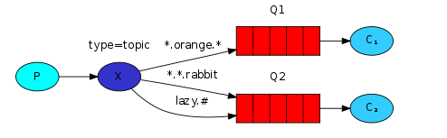
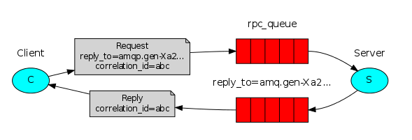

rabbitmq code snippets
Posted on 2016-10-11(星期二) 12:00 in OpenStack
RabbitMQ是一个支持多种通信协议的消息通信中间件，其核心原理即：接收和发送消息，是AMQP的典型应用。以下分模块列出与之相关的demo。
一、Hello World
以下实例实现了发送消息到一个已知队列中，并从该队列中接收消息。 send.py会发送一个消息到队列中，但是首先需要建立到RabbitMQ服务器的连接。
#!/usr/bin/env python
import pika
connection = pika.BlockingConnection(pika.ConnectionParameters(
host='localhost',port=5672))
channel = connection.channel() #建立一个到RabbitMQ服务器的连接
channel.queue_declare(queue='hello') #申明一个队列，消息将被发送到这个队列中
channel.basic_publish(exchange='', #exchange=''表示使用默认的交换机，由该默认交换机来指定某条消息需要投递
#到哪个队列，routing_key指定队列的名称
routing_key='hello',
body='Hello World!')
print " [x] Sent 'Hello World!'"
connection.close() #在退出程序之前，我们需要确认网络缓冲已经被刷写、消息已经投递到RabbitMQ
receive.py将会从队列中获取消息并将消息打印出来，前提仍然是需要先建立到RabbitMQ服务器的连接。
#!/usr/bin/env python
import pika
connection = pika.BlockingConnection(pika.ConnectionParameters(
host='localhost',port=5672))
channel = connection.channel()
channel.queue_declare(queue='hello') #使用queue_declare创建一个队列,即使多次运行这个命令但只有一个队列会被创建。因为我们
#并不确定哪个程序会首先运行。这种情况下，在程序中重复将队列重复声明一下是种值得推荐的做法
print ' [*] Waiting for messages. To exit press CTRL+C'
def callback(ch, method, properties, body): #该回调函数接收到的消息内容并输出到屏幕上
print " [x] Received %r" % (body,)
channel.basic_consume(callback, #告诉RabbitMQ callback将从queue中接收消息
queue='hello',
no_ack=True)
print ' [*] Waiting for messages. To exit press CTRL+C' #等待消息数据
channel.start_consuming()
二、工作队列
工作队列是为了避免等待一些占用大量资源、时间的操作。后台的工作者worker进程会将任务从队列中取出并处理。若运行多个了工作者，任务会在这些工作者之间共享。默认情况下， RabbitMQ采用的是轮询机制，会按照顺序把消息发送给每一个消费者，使得平均每个消费者接收到同等数量的消息。
2.1 轮询调度
以下实例通过发送字符串并在字符串之后加点号（.）来表示任务的复杂度，一个点号（.）将会耗时1秒钟。
1）new_task.py会按照计划发送任务到工作队列。在以上send.py的基础上，主要是重新定义了消息message，通过此message来模拟。
import sys
message=''.join(sys.argv[1:]) or "Hello World!"
channel.basic_publish(exchange='',routing_key='hello',body=message)
print " [x] Sent %r" % (message,)
2）worker.py实现了为消息体中每一个点号（.）模拟1秒钟操作。主要在receive.py的基础上添加修改了如下代码。
import time
def callback(ch, method, properties, body):
print " [x] Received %r" % (body,)
time.sleep( body.count('.') )
print " [x] Done"
可以通过在多个终端上运行worker.py脚本，同时在一个终端上不断运行new_task.py string，观察结果。
2.2 消息确认
为了防止消息丢失，RabbitMQ提供了消息确认机制，工作者可以通过ack，通知RabbitMQ已经收到并处理了某条信息；若工作者挂掉，RabbitMQ会将任务发送给其他工作者；若工作者和消息断开连接，RabbitMQ会重新发送信息。该机制通过no_ack=True设置，默认情况下开启。
2.3 消息持久化
将“队列”和“消息”设为持久化，可以防止当RabbitMQ服务器崩溃时，丢失所有的队列和信息。该机制通过durable=True设置。需要在消息发送端的代码new_task.py中如下代码：
1）设置队列持久化
channel.queue_declare(queue='task_queue', durable=True)
2）设置消息持久化
在new_task.py中添加如下代码实现消息
channel.basic_publish(exchange='',
routing_key="task_queue",
body=message,
properties=pika.BasicProperties(
delivery_mode = 2, # 设置消息持久化
))
2.4 公平调度
公平调度实现了多个worker进程之间任务的均匀分配。 通过使用basic.qos方法，设置prefetch_count=1，告诉RabbitMQ在同一时刻，不要发送超过1条消息给某一个worker进程，直到该worker进程处理完了上一条消息并作出了响应。 在worker.py中添加如下代码实现公平调度：
channel.basic_qos(prefetch_count=1)
注意：当所有的worker处于繁忙状态时，消息队列会被填满，此时可以添加更多的worker或采用其他方式解决。
三、发布/订阅
前两部分都是将一个message发送给一个consumer，现在我们尝试将一个message发送给多个consumer（即broadcast）。每个consumer收到消息后都可以做不同的处理。例如接下来我们要做一个简单的logging system，productor发送一个log，一个receiver负责存在硬盘里，一个receiver负责显示在屏幕上。工作模型如下：

send.py:
#!/usr/bin/env python
# -*- coding=utf-8 -*-
import pika
import sys
conn = pika.BlockingConnection(pika.ConnectionParameters(host='localhost'))
channel = conn.channel()
# 声明一个exchange,类型为fanout.
channel.exchange_declare(exchange='logs',type='fanout')
msg = ' '.join(sys.argv[1:]) or "info: Hello World!"
# 这里的exchange不再为空，而是指定为‘log’
# 这里的routing_key为空串，因为fanout型的exchange会忽略它
channel.basic_publish(exchange='logs',
routing_key='',
body=msg)
print "[x] sent %s" %msg
conn.close()
receive.py
#!/usr/bin/env python
# -*- coding=utf-8 -*-
import pika
import sys
conn = pika.BlockingConnection(pika.ConnectionParameters('localhost'))
channel = conn.channel()
channel.exchange_declare(exchange='logs', type='fanout')
# 声明一个queue，这里不指明queue的名字，而是由系统随机生成，通常形如amq.xxx。
# 而exclusive设为True的意义是： once we disconnect the consumer the queue should be deleted
# 这样，无论什么时候我们需要一个空queue，都可以这样生成一个有随机名字的queue
res = channel.queue_declare(exclusive=True)
# 获取队列的名字
queue_name = res.method.queue
# 绑定queue和exchange，告诉exchange要把message路由到哪个queue
channel.queue_bind(exchange='logs', queue=queue_name)
print "[x] wait for logs.To exit press CTRL-c"
def callback(ch, method, properties, body):
print "[x] receive %s" %body
channel.basic_consume(callback, queue=queue_name, no_ack=True)
channel.start_consuming()
运行多个receiver端，可以看到它们是同时接收到message的。
# 将接收到的消息日志存入文件
python receive.py > log.txt
# 将接收到的消息日志显示在屏幕上
python receive.py
四、路由（直接匹配）
第三部分实现了exchange给与它绑定的所有queue广播消息，这里实现发送端指定接收的queue。原理很简单,将一个queue和一个exchange绑定时，可以指定一个路由键(binding key)。发送端发送消息时，设定相应的路由键(routing key)，这样，当message到达exchange时，就根据路由键，将message发送给相应的queue。这里继上一篇，发送端指定info、warning、error三种级别的信息，由exchange发送到不同的接收端。工作模型如下:

4.1 绑定时指定路由键
channel.queue_bind(exchange=exchange_name,
queue=queue_name,
routing_key='error')
4.2 直接交换（Direct exchange）
exchange有四种类型，分别为direct,fanout,topic,headers。第三部分声明exchange时类型是fanout，fanout exchange会忽略路由键，而将message发送给每一个绑定了的队列，继而实现了广播的功能。为了给特定队列发送message，这里指定exchange的类型设定为direct。这样，exchange会将bind key 与 routing key 进行比较，若相同，则发送给相应的队列。若没有binding key 与routing key相同，则把message丢弃。
# 绑定queue和exchange，指定类型为direct
channel.exchange_declare(exchange='direct_logs',
type='direct')
# 发送message时，设定routing key
channel.basic_publish(exchange='direct_logs',
routing_key=severity,
body=message)
4.3 多重绑定
多个queue与exchange绑定时，可以有相同的binding key，这样，当一个routing key与这个binding key相同时，message会发送给相应的多个queue，实现类似组播的功能。效果如图:

具体实现
#!/usr/bin/env python
# -*- coding=utf-8 -*-
import pika
import sys
conn = pika.BlockingConnection(pika.ConnectionParameters(host='localhost'))
channel = conn.channel()
# 设定一个direct exchange
channel.exchange_declare(exchange='direct_logs',type='direct')
# 发送三个不同routing key 的message
routing = ['info', 'warning', 'error']
for route in routing:
msg = "%s: hello wordol" % route
channel.basic_publish(exchange='direct_logs',
routing_key=route,
body=msg)
print "[x] sent %s" %msg
conn.close()
相比前一节，改动主要有两点： 1. 设定exchange的类型为direct 2. 发送消息时指定routing_key
receive.py:
#!/usr/bin/env python
# -*- coding=utf-8 -*-
import pika
import sys
conn = pika.BlockingConnection(pika.ConnectionParameters(host='localhost'))
channel = conn.channel()
channel.exchange_declare(exchange='direct_logs', type='direct')
res = channel.queue_declare(exclusive=True)
queue_name = res.method.queue
# 从命令行接收binding key参数，若没有，则设为error
routings = sys.argv[1:]
if not routings:
routings = ['error']
for route in routings:
print route
channel.queue_bind(exchange='direct_logs',
queue=queue_name,
routing_key=route)
print "[x] wait for logs.To exit press CTRL-c"
def callback(ch, method, properties, body):
print "[x] receive %s" %body
channel.basic_consume(callback, queue=queue_name, no_ack=True)
channel.start_consuming()
相比前一节，改动主要有两点： 1. 设定exchange的类型为direct 2. 从命令行接收binding key参数，从而在绑定时使用
五、主题交换机（模糊匹配）
由上可以看出，直连交换机可以有选择性的接收日志，但是无法基于多个标准执行路由操作。主题交换机的作用就是为了该目的来实现，大大提高了灵活性。 主题交换机的路由键是一个由.分隔开的词语列表，比如“a.b.c”, "a.d.e", "e.z.c"。 以下用图来说明：

这三个绑定键被可以总结为： Q1 对所有的桔黄色动物都感兴趣。 Q2 则是对所有的兔子和所有懒惰的动物感兴趣。 两个通配符： '': 匹配前一个字符一次或多次 '#': 匹配前一个字符0次或多次 例： a. ，匹配的有a., a.b等等 a.#，匹配的有a,a., a.b....
emit_log_topic.py:
#!/usr/bin/env python
import pika
import sys
connection = pika.BlockingConnection(pika.ConnectionParameters(
host='localhost',port=5672))
channel = connection.channel()
channel.exchange_declare(exchange='topic_logs',type='topic')
routing_key = sys.argv[1] if len(sys.argv) > 1 else 'anonymous.info' #设置路由键
message = ' '.join(sys.argv[2:]) or 'Hello World!'
channel.basic_publish(exchange='topic_logs',
routing_key=routing_key,
body=message)
print(" [x] Sent %r:%r" % (routing_key, message))
connection.close()
receive_logs_topic.py:
#!/usr/bin/env python
import pika
import sys
connection = pika.BlockingConnection(pika.ConnectionParameters(
host='localhost',port=5672))
channel = connection.channel()
channel.exchange_declare(exchange='topic_logs',type='topic')
result = channel.queue_declare(exclusive=True) #随机生成队列
queue_name = result.method.queue
binding_keys = sys.argv[1:]
if not binding_keys:
sys.stderr.write("Usage: %s [binding_key]...\n" % sys.argv[0])
sys.exit(1)
for binding_key in binding_keys: #获取绑定键，将绑定键和路由键做匹配，进行选择接受的日志类型
channel.queue_bind(exchange='topic_logs',queue=queue_name,routing_key=binding_key)
print(' [*] Waiting for logs. To exit press CTRL+C')
def callback(ch, method, properties, body):
print(" [x] %r:%r" % (method.routing_key, body))
channel.basic_consume(callback,queue=queue_name,no_ack=True)
channel.start_consuming()
观察到运行结果如下：
shell1 $ ./emit_log_topic.py "kern.critical" "A critical kernel error"
[x] Sent '':'A critical kernel error'
shell2 $ ./receive_logs_topic.py "#" #接收所有日志信息
[*] Waiting for logs. To exit press CTRL+C
[x] 'kern.critical':'A critical kernel error'
shell3 $ ./receive_logs_topic.py "kern.*" #接收所有来自内核的日志信息
[*] Waiting for logs. To exit press CTRL+C
[x] 'kern.critical':'A critical kernel error'
shell4 $ ./receive_logs_topic.py "*.error" #接收所有的错误信息
[*] Waiting for logs. To exit press CTRL+C
说明: 1. binding key 设置为'#'时，topic exchange 和 fanout exchange的效果一样，相应的queue能接收到每一个message。 2. binding key 里没有'*'或‘#’时， topic exchange 和 direct exchange的效果一样。
六、远程过程调用
将一个函数运行在远程计算机上并且等待从那儿获得结果，这种模式被称为远程过程调用RPC。 以下实例模拟RPC服务来返回斐波那契数列。 服务器端代码：
rpc_server.py:
#!/usr/bin/env python
import pika
connection = pika.BlockingConnection(pika.ConnectionParameters(host='localhost',port=5672)) #建立到RabbitMQ服务器的连接
channel = connection.channel() #建立通道
channel.queue_declare(queue='rpc_queue') #申明消息队列
def fib(n): #定义斐波那契函数
if n == 0:
return 0
elif n == 1:
return 1
else:
return fib(n-1) + fib(n-2)
def on_request(ch,method,props,body): #为basic_consume声明一个回调函数，执行实际的操作并且做出响应
n=int(body)
print "[.] fib(%s)" % (n,)
response = fib(n)
ch.basic_publish(exchange='',
routing_key=props.reply_to, #reply_to（回复目标）：用来命名回调队列
properties=pika.BasicProperties(correlation_id=props.correlation_id), #correlation_id（关联标识）：将RPC的响应和请求关联起来
body=str(response))
ch.basic_ack(delivery_tag = method.delivery_tag) #这是上面提到过得消息确认机制
channel.basic_qos(prefetch_count=1) #实现公平调度机制
channel.basic_consume(on_request,queue='rpc_queue')
print "[x] Awaiting RPC requests"
channel.start_consuming()
客户端代码：
#!/usr/bin/env python
import pika
import uuid
class FibonacciRpcClient(object):
def __init__(self):
self.connection = pika.BlockingConnection(pika.ConnectionParameters(
host='localhost'))
self.channel = self.connection.channel()
result = self.channel.queue_declare(exclusive=True) #声明匿名独享的回调队列
self.callback_queue = result.method.queue
self.channel.basic_consume(self.on_response, no_ack=True,
queue=self.callback_queue) #订阅上面声明的回调队列，以便接收RPC的响应
def on_response(self, ch, method, props, body):
if self.corr_id == props.correlation_id: #检查每一个响应消息的correlation_id是否与我们期待的一致
self.response = body #若correlation_id一致，则将响应结果赋值给self.response
def call(self, n): #执行RPC请求
self.response = None
self.corr_id = str(uuid.uuid4()) #生成一个唯一的correlation_id，并将其保存起来
self.channel.basic_publish(exchange='', #将带有reply_to和correlation_id属性的消息发布出去
routing_key='rpc_queue',
properties=pika.BasicProperties(reply_to = self.callback_queue,
correlation_id = self.corr_id,),
body=str(n))
while self.response is None:
self.connection.process_data_events()
return int(self.response)
fibonacci_rpc = FibonacciRpcClient() #发送RPC请求
print(" [x] Requesting fib(30)")
response = fibonacci_rpc.call(30)
print(" [.] Got %r" % response) #接收响应的结果并打印
七、总结

RPC的工作机制如下：
客户端启动时，会创建一个匿名独享的回调队列； 在RPC请求中，客户端通过basic_publish发送带有两个属性的消息：一个是设置回调队列的 reply_to属性，另一个是设置唯一值的 correlation_id 属性； 以上请求会发送到rpc_queue队列中； RPC服务器端会等待请求发送到这个队列中。当请求出现时，服务器端执行他的工作并将带有执行结果的消息发送给reply_to字段指定的队列； 客户端等待回调队列里的数据，当消息出现时，它会检查correlation_id属性，若此属性值与请求匹配，就将其返回给应用。
八、参考文档
- http://www.rabbitmq.com/tutorials/tutorial-one-python.html
- http://rabbitmq.mr-ping.com/